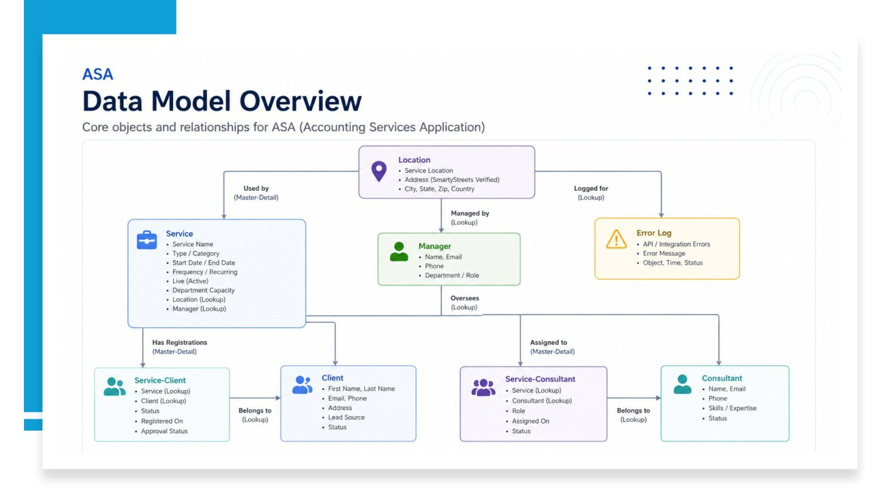
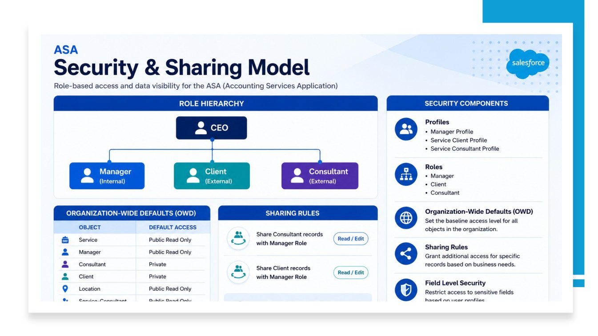
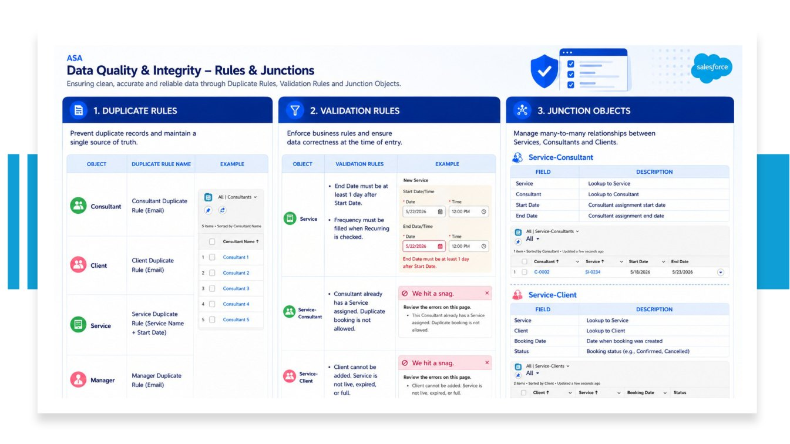
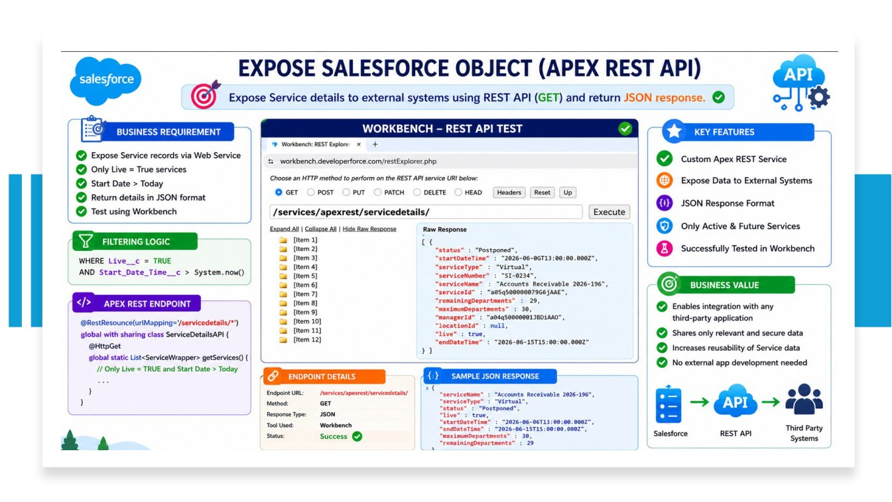
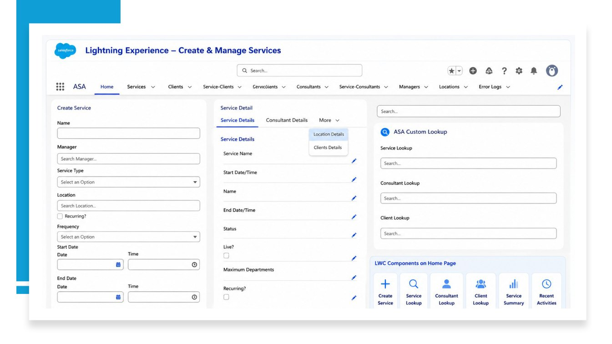

Accounting Services Application.
Designing a connected service management experience with Salesforce data modeling, access control, automation, Apex integrations and Lightning Web Components.
Too many processes. Too little clarity.
Accounting service operations require a clear way to coordinate services, clients, consultants, managers and locations. When information and bookings are spread across manual steps, duplicate assignments, inconsistent records and missed communications become more likely.
The challenge was to bring those workflows into a structured Salesforce-based system without losing sight of the people using it.
One connected Salesforce experience.
Centralize
Keep Services, Clients, Consultants, Managers and Locations connected in a custom Lightning application.
Validate
Use business rules, duplicate checks and controlled access to protect the quality and visibility of records.
Automate
Support registration messages, approval processes, address validation, error logs and integrations.
Relationships built for real workflows.
Eight core objects
Location · Manager · Service · Client · Consultant · Service–Client · Service–Consultant · Error Log
Service–Client and Service–Consultant are junction objects that connect business records. The source requirements specify master-detail relationships for both junctions.
Controlled visibility
Role hierarchy, profiles, object and field permissions, organization-wide defaults (OWD), and sharing rules organize who can view and manage information.
The requirements specify private access for Client and Consultant records with additional Read/Edit sharing to the Manager role.
From configuration to custom development.
Data integrity
Recurring services require a Frequency; end dates must follow start dates; in-person Services need a Location. Service–Client registration checks service availability and capacity.
Flow & communication
Record-triggered processes support client confirmation emails and lead-related approval and record creation workflows.
Smarty address verification
Invocable Apex and Flow connect Location data to SmartyStreets verification, with reusable error handling.
Apex REST API
A custom GET service exposes selected live, future Service records in JSON. The project presentation includes a Workbench test screenshot.
Lightning Web Components
A custom searchable lookup, a Service creation interface and tabbed Service Details bring key actions closer to the user.
Error logging
A dedicated Error Log object records processing failures, supporting investigation of automation and integration issues.
Inside the implementation.
These images come from the ASA project presentation. Architecture and security slides are explanatory diagrams; embedded Salesforce and Workbench panels illustrate the development and test work. Click to enlarge.





Screens have been reproduced from the supplied project presentation for portfolio illustration. These are not independently audited deployment or test results; no performance metrics are claimed.
Where engineering meets judgment.
Connected data
Model many-to-many relationships without losing track of who is assigned to which Service.
Reliable rules
Prevent duplicate records and invalid bookings while keeping user actions understandable.
External services
Handle API errors and expose only relevant Service data to outside systems.
Declarative thinking. Developer execution.
The ASA project connects configuration, application logic, integration and interface design into one coherent practice project. My work spans Salesforce administration and development, with a focus on making complicated workflows more understandable and reliable.
This is a learning/development case study. Slides also discuss proposed and future capabilities; those are not presented here as deployed production features. Measured business outcomes and code coverage figures are not claimed without supporting evidence.